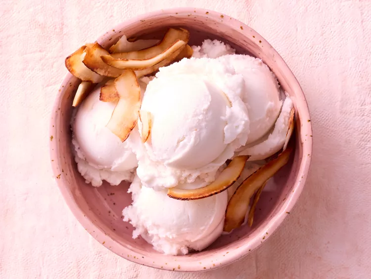

Coconut Milk Ice Cream
Home

Description
This coconut milk ice cream, lightly flavored with vanilla, is a delicious dairy-free treat.
- Prep Time: 5 mins
- Chill Time: 2 mins
- Freeze Time: 2 mins
- Total Time: 6 hrs 5 mins
Ingredients
- 1 (13.5 ounce) can unsweetened coconut milk
- 1/3 cup white sugar
- 1 1/2 teaspoons vanilla extract
- 1/8 teaspoon salt
Steps
- Whisk together coconut milk, sugar, vanilla extract, and salt in a small bowl until sugar dissolves.
- Chill until cold, at least 2 hours.
- Churn in an ice cream maker according to manufacturer’s directions.
- Freeze in an airtight container at least 4 hours or up to 3 months.